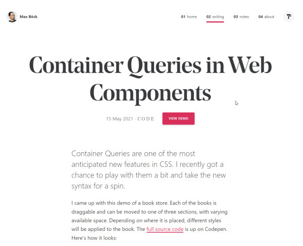
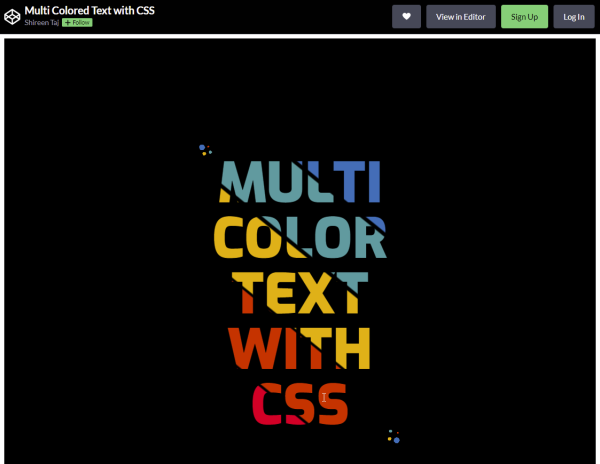
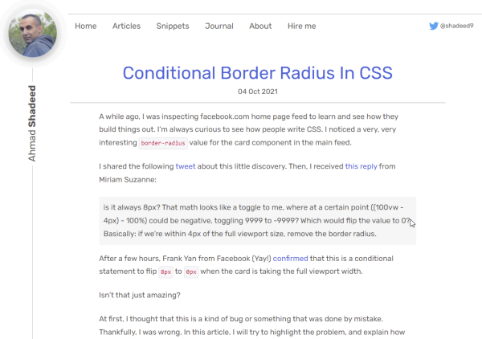
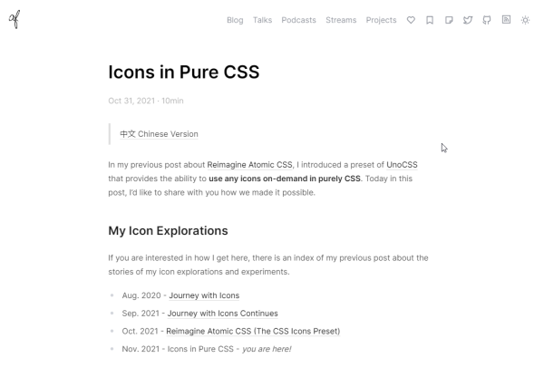
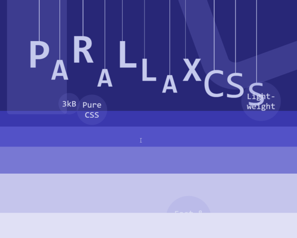
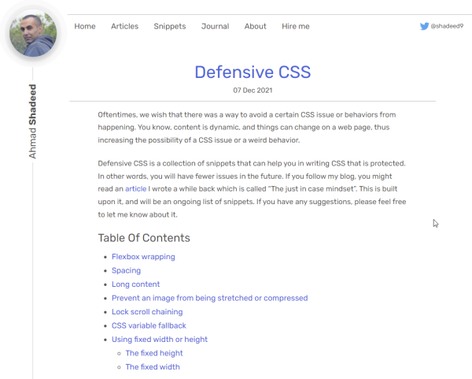
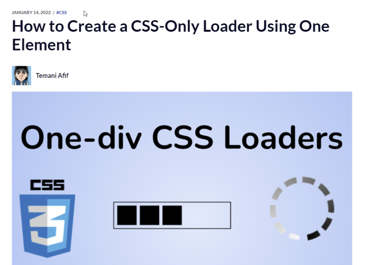

Discoveries #17 - CSS
- Easing Functions Cheat Sheet
- A New Way To Reduce Font Loading Impact: CSS Font Descriptors
- Container Queries in Web Components
- Multi Color Text With CSS
- Conditional Border Radius In CSS
- Icons in Pure CSS
- parallax.css
- Defensive CSS
- How to Create a CSS-Only Loader Using One Element
- Getting Your head Straight: A New CSS Performance Diagnostics Snippet
Easing Functions Cheat Sheet
by Andrey Sitnik & Ivan Solovevhttps://github.com/ai/easings.net
Ever wanted to implement an easing function in CSS and dont know how? Andrey and Ivan provide a really useful web project via Github, with the code of 30 easing function, including samples and the math functions behind. Download or fork and run locally or simply use this gitpod Link.

A New Way To Reduce Font Loading Impact: CSS Font Descriptors
by Barry Pollardhttps://www.smashingmagazine.com/2021/05/reduce-font-loading-impact-css-descriptors/
Barry gives an insight into the modern use of web fonts, hints on how to use font-display and an outlook on how everything could be better in the future.
Container Queries in Web Components
by Max Böckhttps://mxb.dev/blog/container-queries-web-components/
Container Queries are one of the most anticipated new features in CSS and Max gives an insight into the possibilities, including a demo.
Multi Color Text With CSS
by Shireen Tajhttps://codepen.io/TajShireen/full/YzZmbep
UI developer Shireen has made a wonderful sample on CodePen on how to show text in multile colors using linear gradient backgrounds.
Conditional Border Radius In CSS
by Ahmad Shaheedhttps://ishadeed.com/article/conditional-border-radius/
CSS expert Ahmad shows us a smart way to provide different border radius regarding the size of an object in the viewport, he has learned from the facebook developers.
Icons in Pure CSS
by Anthony Fuhttps://antfu.me/posts/icons-in-pure-css
Anthony has found a clever way on combining the icon framework iconify with CSS, to save the use of icon fonts and deliver pure SVG instead.
parallax.css
by Matyansonhttps://github.com/Matyanson/parallax.css/
Github user ‘Matyanson’ has written a CSS package for using parallax effects easily on every website.
Defensive CSS
by Ahmad Shaheedhttps://ishadeed.com/article/defensive-css/
In order to prevent pittfalls, you have to use CSS wisely. Ahmad show us some techniques on how to write defensive and thus protected code.
How to Create a CSS-Only Loader Using One Element
by Temani Afifhttps://www.freecodecamp.org/news/how-to-create-a-css-only-loader
Loaders are everywhere and many of them are based on images or SVG. But this does not have to be, as Temani finds. CSS is perfectly sufficient for this.
Getting Your head Straight: A New CSS Performance Diagnostics Snippet
by Vitaly Friedmanhttps://www.smashingmagazine.com/2021/09/css-head-tag/
Chrome Debugger has tons of possibilities to ensure to find performance bottlenecks or other discrepancies. Vitaly brings us closer a little snippet that Harry Roberts wrote, which exposes potential performance issues in your page’s <head> tag: ct.css.
You can interact with this article (applause, criticism, whatever) by mention it in one of your posts, which will be shown here as a Webmention, or by leaving a good old comment with your GitHub account.
Webmentions
No Webmentions yet...
In case your blog software can't send Webmentions, you can use this form to submit me a mention of this article...


Comments